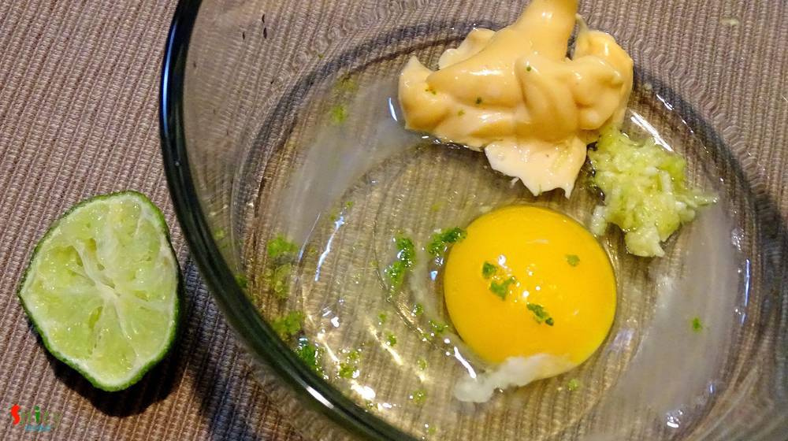
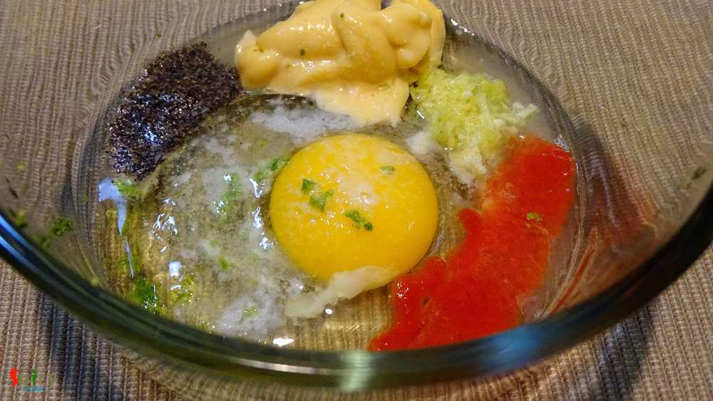
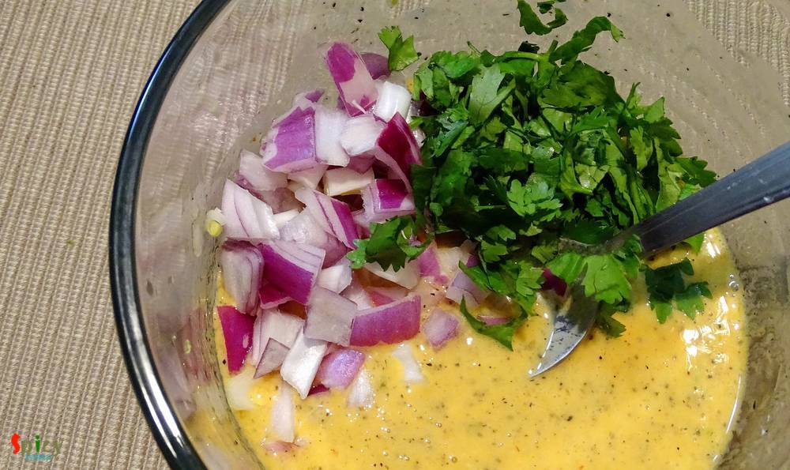
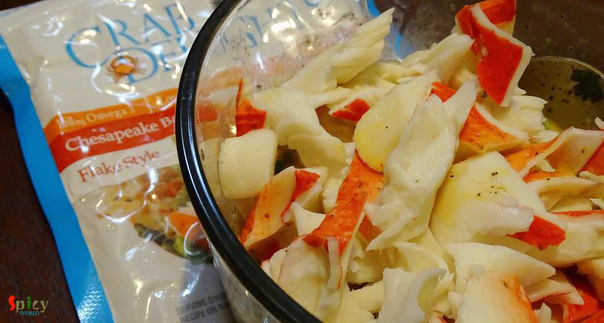
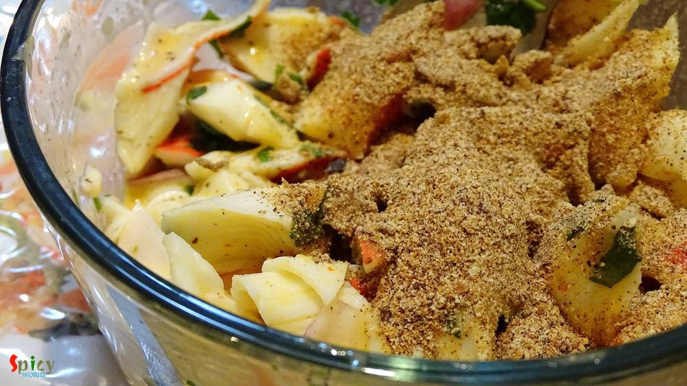
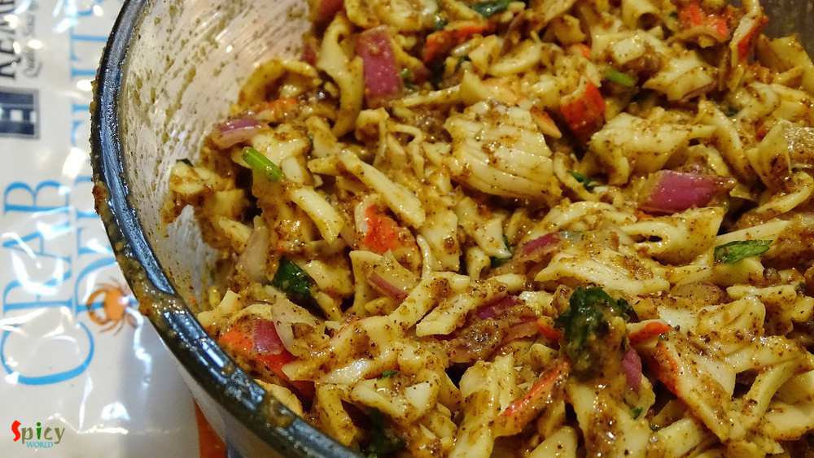
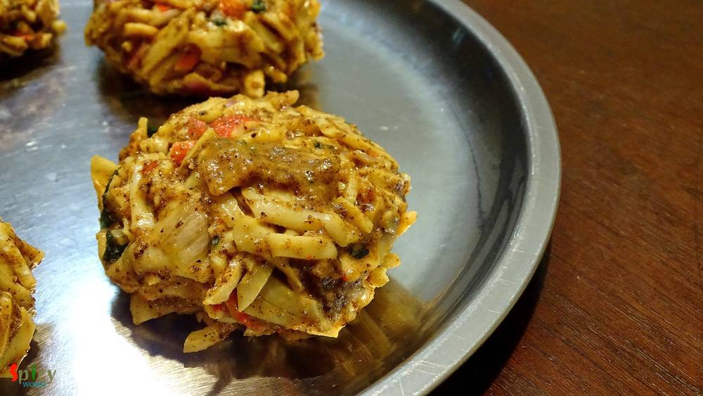
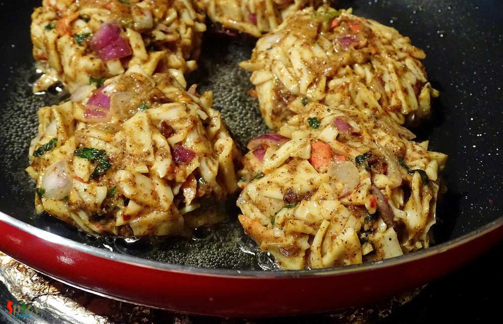
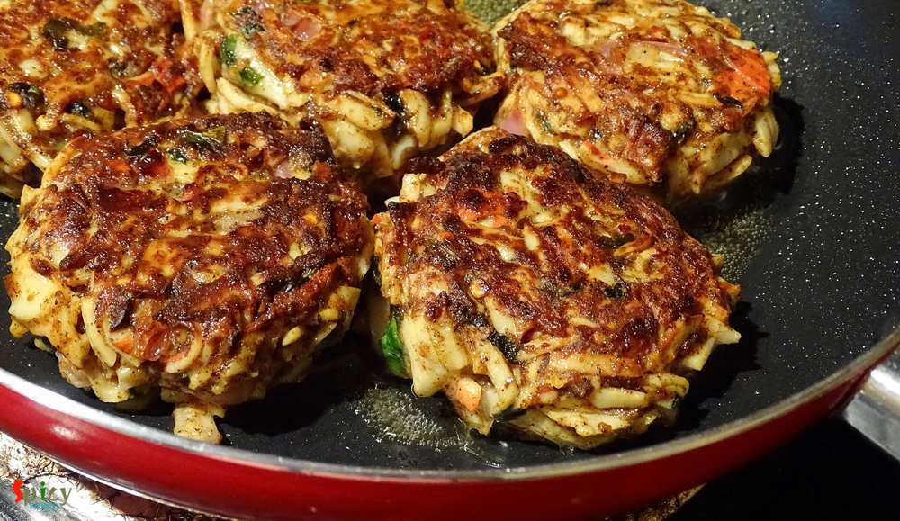
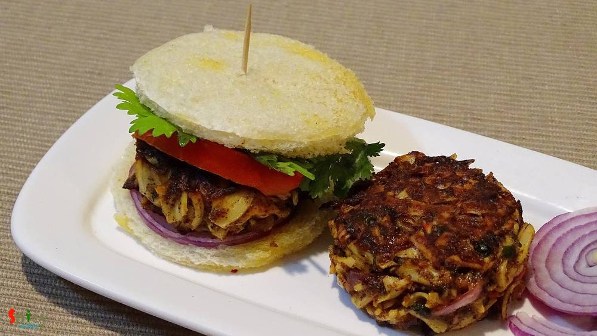

Simple and Easy Recipes
Crab Cakes / Crab Patties
© 2016 Spicy World, Published on: Jan 5, 2016
In India I never had crab, because they always scares me. After coming to USA, oneday we went for dinner in a restaurant. 'He' already ordered 'crab cake' as appetizer when I went to restroom. I really got upset after returning because I had no idea that crab cake is made of crab meat only. But when they served two cakes in a plate, the platter really impressed me. The taste was phenomenal and most important they didn't scare me at all. After that dinner I tried it in many other restaurants also and fell in love with crab meat (not whole crab). Last weekend I made these cakes at home and they came out delicious. Try this in your kitchen and let me know how it turns out.

Ingredients
- 2 cups of crab meat (flake style).
- 1 egg.
- 2 Teaspoons of mayonnaise.
- 1 Teaspoon of crushed garlic.
- 3 Teaspoons of lemon juice.
- Little lemon zest.
- 1 Teaspoon of black pepper powder.
- 2 Tablespoons of chilli sauce / sriracha sauce.
- half cup of chopped onion.
- 2 Teaspoons of chopped coriander leaves.
- 4 - 5 Tablespoons of bread crumbs.
- 1 Teaspoon of flour / maida.
- Little garam masala powder.
- Salt.
- Oil for frying.

Steps
Take a bowl.
Add egg, mayonnaise, garlic, lemon juice and lemon zest.
Add chilli sauce, salt and black pepper powder. Mix it well.
Now add chopped onion and coriander leaves. Mix them well.
Add the crab meat to the mixture. Mix it.
For binding add bread crumbs and flour to the crab. Mix everything well.
Lastly sprinkle some garam masala powder and mix it.
Now take some portion from the mixture and give a patty shape.
Do the same with rest of the mixture.
Keep them in fridge for 1 hour.
Then heat half cup of oil in a flat pan.
Place the patties in hot oil one by one.
Fry them for 3-4 minutes in one side.
Flip them and again fry them for 3-4 minutes.
Do not overcook them, otherwise they will become hard.
Remove them from oil and keep them on a paper tissue.
You can also make burgers with these patties.
Your Crab cakes are ready ...
Enjoy them hot with onion rings and ketchup ...
")